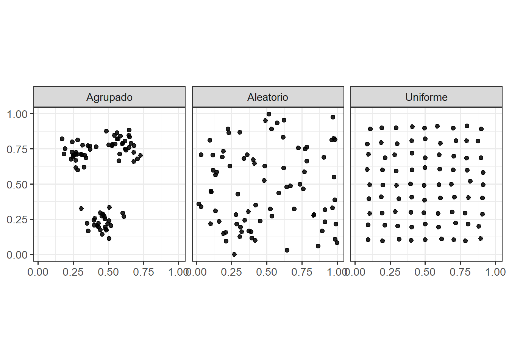
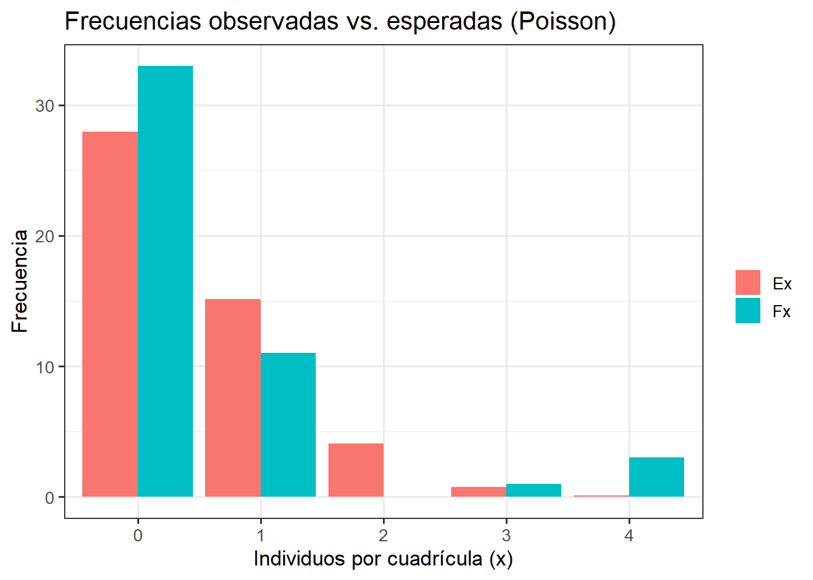
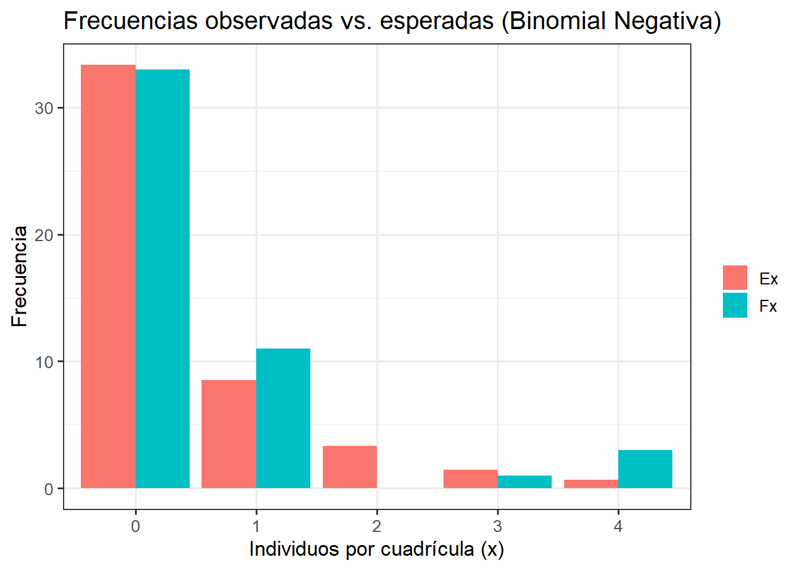
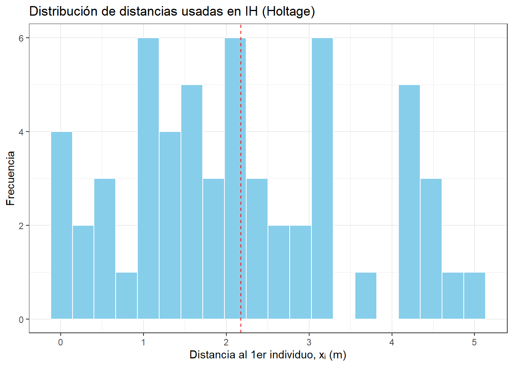
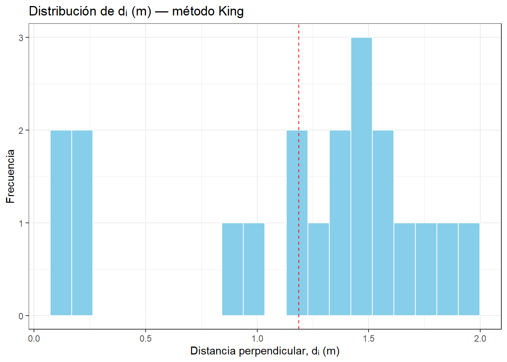
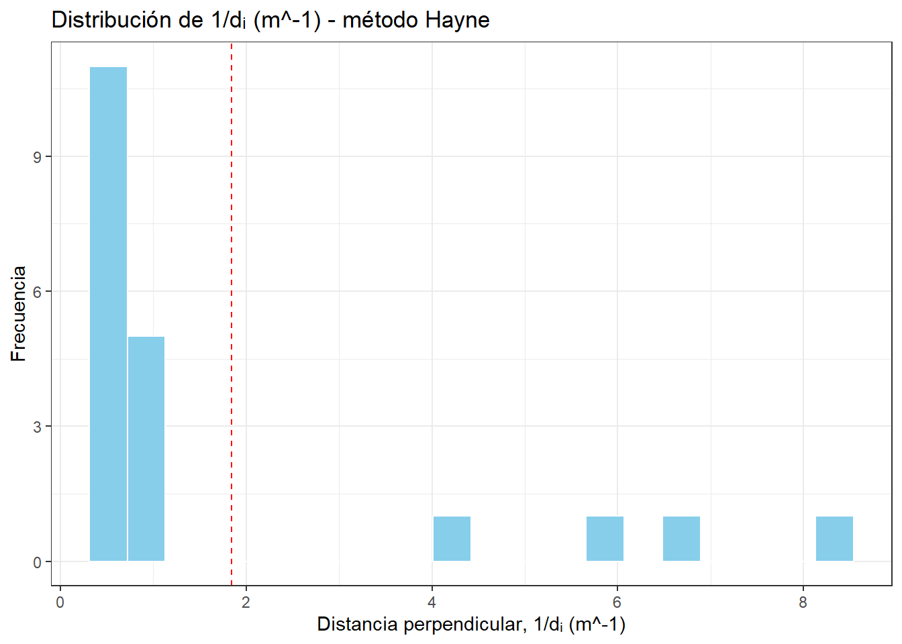

Esquema didáctico de patrones espaciales: agrupado (parches), aleatorio (Poisson) y uniforme.
Introducción
1. Densidad de una población. La cuantificación del número de individuos de una especie, es el primer paso requerido, si se quiere conocer aspectos ecológicos de una población. En caso de que la estimación se realice, con relación a una unidad de superficie o de volumen, se puede hacer una estimación de la densidad de los individuos de esa población. Al evaluar la densidad de una población, de manera más sencilla, existen dos formas: (1) densidad absoluta que corresponde al número de individuos por unidad de área o volumen, por ejemplo, cuando se intenta relacionar la densidad de una población con su tasa reproductiva u otro estadístico vital y el análisis demanda tener información de los individuos en términos absolutos. (2) la densidad relativa que es la densidad de una población relativa a otra, puede estimarse con base a algún índice biológico que se correlacione con este tipo de densidad. Esta densidad es más adecuada para resolver problemas ecológicos además de ser más sencilla y económica de realizar que la densidad absoluta. Por ejemplo, algunas poblaciones suelen presentar una mayor abundancia en áreas con diferente grado de alteración natural o antrópico.
2. Patrones de distribución. De acuerdo a Krebs (1998), dos preguntas centrales en estudios ecológicos de poblaciones, se centran en saber cuántos individuos hay (densidad) y como están distribuidos (posicionamiento). Si se decide utilizar un pesticida para combatir una población de insectos plaga, es importante saber, cuáles son sus proporciones o densidades y cómo viven o se distribuyen estos organismos en las plantas hospederas. Si se desea conocer el impacto de un depredador sobre una población de presas, es importante conocer su densidad y distribución espacial.
Conteos de plantas o animales en áreas de tamaño conocido están entre las técnicas más antiguas de la ecología (Krebs, 1998). Los muestreos son fáciles de realizar y pueden ser utilizados en una gran variedad de organismos. Se requiere de dos requisitos principales: (1) que el área (o volumen) es requerida para el conteo y (2) que los organismos sean poco móviles o fáciles de contar. El muestreo en cuadrantes ha sido utilizado extensamente en plantas y algunas poblaciones de animales semi-sésiles. En poblaciones de mayor movilidad es necesario tener un buen entrenamiento.
En cuanto a la pregunta relacionada a la distribución de los individuos, debemos hacernos la idea de que tan dispersos o agrupados están los individuos de las poblaciones naturales, lo cual puede proporcionar una idea de las interacciones y asociaciones potenciales intraespecificas. Los organismos pueden distribuirse espacialmente en la naturaleza de manera aleatoria, agrupada o uniforme y una primera decisión que se puede hacer es determinar el índice ecológico o análisis estadístico que identifique a estos tres patrones.
Para la detección en campo de estos patrones de distribución de la población en estudio, se pueden presentar dos situaciones distintas, primero tener un mapeo espacial completo de la población en estudio. Esta es la situación ideal pues se pueden aplicar modelos matemáticos robustos y precisos de mapeos espaciales. Con estos mapas enumerados podemos conocer correctamente la densidad de las poblaciones. La segunda situación se presenta cuando se requiere muestrear poblaciones extensas que no han sido mapeadas ni enumeradas completamente.
Alle et al. (1949) afirman que las distribuciones agrupadas o contagiosas son una regla en la distribución de las poblaciones naturales. Esto se debe a numerosos factores a los que se puede atribuir el contagio de la distribución de los animales en el espacio. Una vez identificados estos factores, se está en condiciones de describir cuantitativamente los diferentes arreglos espaciales con base a modelos matemáticos, así como la bondad estadística en su descripción (pruebas de bondad Chi-Cuadrado y Kolmogorov-Smirnof).
(1) La distribución Aleatoria o azarosa (random), corresponde al arreglo más simple de los individuos en el espacio, es decir, que implica el menor número de supuestos y no necesita suponer mecanismos especiales de ningún tipo o proceso. Esta distribución parte de considerar dos tipos de supuestos (a) todos los puntos en el espacio tienen la misma probabilidad de ser ocupados por un organismo. (b) La presencia de un organismo en su ubicación espacial no afecta a la ubicación de otro organismo. Esto implica homogeneidad del ambiente, en un espacio que no solo pierde su continuidad, sino que también debe presentar las mismas condiciones de habitabilidad, lo cual impone condiciones pocas veces encontradas en sistemas naturales.
(2) La distribución agrupada, contagiosa o en parches (clumped), refleja un patrón de heterogeneidad de los individuos y su ambiente (ej. Disposición de recursos como luz, temperatura, alimento, parejas, etc.). En un espacio con discontinuidades los factores ambientales varían de manera irregular, pero en límites en los cuales habrá zonas con óptima concentración de individuos, zonas de condiciones intermedias donde el número de individuos será intermedio y zonas con las mínimas condiciones la presencia de individuos.
(3) La distribución uniforme o regular (uniform), se presenta en situaciones en donde existe un medio físico- biótico constante a lo largo del espacio, genera una interacción negativa entre los individuos, y puede deberse a la competencia entre los miembros de la población por cierto recurso que en la mayoría de los casos es el espacio o el alimento.
1. Ejemplo con Calotropis procera
Objetivo general
Realizar un estudio sobre el patrón de distribución de una muestra de individuos censados de Calotropis procera ubicada en la parcela de bosque seco – Unimagdalena.
Objetivos específicos.
1) Determinar el patrón de distribución espacial de la muestra censada, con base a pruebas estadísticas (Poisson y Binomial Negativa) e índices de dispersión.
2) Determinar la densidad de individuos en la muestra censada de C. procera.
Diseño metodológico
El diseño de muestreo consiste en la colecta de datos, de acuerdo a metodologías orientadas para densidades y distribución de individuos de la especie en estudio, presentes en una parcela con las condiciones requeridas.
Las siguientes figuras esquematiza el diseño de muestreo para responder las preguntas relacionadas con: (A) la distribución de la especies (diseño de la parcela) y (b) la abundancia o densidad (transecto diagonal). Es un esquema del diseño del croquis y de la parcela a evaluar, para la selección de cuadrantes o cuadriculas de 2 x 2 m y los puntos de intersección, de los cuales se seleccionarán 58 puntos al azar (para calcular densidad de individuos), modificado de Bonilla & Guillot (2003).


En este sentido, se debe debe elaborar en papel, el croquis de un lote o prcela con dimensiones de 20 x 20 m (400 m2) dividido en cuadriculas de 2 x 2 m (100 cuadros) y numerarse de marea secuencial contando hasta las 100 cuadriculas. En estas cuadriculas se realizan sub-divisiones en su periferia a cada metro para obtener 441 puntos de intersección (200 subcuadriculas de 1m2).
Para el siguiente procedimiento, se debe contar con los datos tabulados en Excel (datos.xlsx), los cuales serán utilizados en el procedimiento paso a paso que se describe a continuación.
A. Estimación estadística de la distribución espacial de la población.
1.) Diseño estadístico
Consiste en desarrollar un procedimiento que permita comparar la distribución espacial de frecuencias observadas en los cuadrantes muestreados contra una distribución espacial de frecuencias esperadas (tabuladas) que se genera aleatoriamente (técnicas estadísticas). Con ello probamos la hipótesis nula (H0) mediante una prueba de bondad de ajuste Chi Cuadrado (x2) la cual infiere: H0 = la distribución de la población es aleatoria y se presenta cuando la probabilidad de que ambas distribuciones de frecuencia (observada y esperada) se ajustan o corresponden a la misma población estadística. Si, por el contrario, el patrón de frecuencia observado difiere significativamente del esperado (no se ajusta), rechazamos a la H0 y el patrón podrá ser agrupado o uniforme. En esta última opción aceptamos la hipótesis alterna (H1: la distribución de la población no es aleatoria) y aplicamos índices o coeficientes de dispersión para determinar si el patrón es agrupado o uniforme (algunos de estos índices se verifican con pruebas de bondad de ajuste).
1.1) Probabilidad Poisson.
Por medio de este modelo matemático se evaluará si el patrón de distribución de la población que satisface mejor las condiciones de un arreglo al azar o aleatorio. Representa a la distribución aleatoria de acuerdo a las siguientes consideraciones: (a) Cada unidad muestral (UM) tiene igual probabilidad de contener a un individuo, (b) la ocurrencia de un individuo en una UM no es influenciada por la presencia de otro, (c) igual disponibilidad de espacio entre cada UM y (d) el número de individuos es relativamente bajo al máximo posible. Los pasos para desarrollar esta prueba son los siguientes:
Paso 1. Establecer la hipótesis de estado: \(H_0\)= los individuos de cada UM presentan distribución Poisson, pues se distribuyen aleatoriamente. Si la hipótesis es rechazada pueden presentarse patrones agrupados o uniformes.
Paso 2. Calcular la distribución de frecuencias observadas \((F_x)=N\): con datos de individuos por UM: (\(x= 0, 1, 2, 3,…r\) individuos), Fx es el número de \(UM\) observadas que contienen a los x individuos. El número mínimo de UM > 30 (ej. 30 hojas, 30 sub-parcelas, etc.) para muestras de menor tamaño aplicar índices de dispersión.
Paso 3. Encontrar las probabilidades Poisson (\(P_x\)): es la probabilidad de encontrar \(x\) individuos en una \(UM\) y está dada por la siguiente ecuación:
\(P_0=e^{-µ}\)
Donde,
\(e\) = 2.7183
\(x!\) = factorial de \(x\) (ej. Para \(x = 3! = (3)(2)(1) = 6\))
\(µ\) = media paramétrica de la distribución Poisson. El estimador de µ es el estadístico computado para las probabilidades \(x= 0, 1, 2, 3,…r\) individuos.
Paso 4. Calcular la distribución de frecuencias esperadas Poisson (\(E_x\)): Surge de multiplicar cada \(P_x\) por su correspondiente \(F_x\) (o \(N_x\)). Así, \(E_x\) presenta la siguiente distribución:
\(E_0 = (N0)P(0),\ E_1 = (N1)P(1),\ E_2 = (N2)P(2), … ,\ E_r = (Nr)P(r)\).
Paso 5. Calcular la prueba de bondad de ajuste (Goodness of fit test) chi-cuadrado x2: Se utiliza para probar el ajuste de la Fx (Paso 2) con la Ex (Paso 3). La prueba x2 se calcula como sigue:
\(x^2 = \sum[(F_x-E_x)^2/E_x]\)
Donde,
\(F_x\) es la frecuencia observada
\(E_x\) es la frecuencia esperada
Los grados de libertad \(g.l. = n – 1\) (n = número de unidades muestrales \(UM\) = 50 cuadrantes aleatorios para este caso).
Tradicionalmente, este valor \(x^2\) calculado, se compara con el \(x^2\) teórico y con los grados de libertad requeridos. De forma manual, los datos de la prueba Poisson se tabulan de la siguiente manera:
| Número de individuos por cuadrícula (x) | Fx | Ex | Px | ((Fₓ − Eₓ)² / Eₓ) |
|---|---|---|---|---|
| Σx² |
Sin embargo, en el siguiente paso, se describe el procedimiento que se realizará en R, para la validación del ajuste a la distribución aleatoria o de ajuste Poisson.
Paso 6. Bondad de ajuste a Poisson (\(\chi^2_{baj}\))
Compara las frecuencias observadas (\(F_x\)) contra las esperadas bajo Poisson (\(E_x\)).
\[
\chi^2_{baj} = \sum \frac{(F_x - E_x)^2}{E_x}
\] Donde,
\(F_x\) = frecuencia observada.
\(E_x\) = frecuencia esperada bajo distribución Poisson.
\(gl = k - 1 - p\) con \(k\) = número de clases (tras agrupar colas) y \(p = 1\) parámetro estimado (\(\lambda = \bar x\)).
si \(\chi^2_{baj}\) es mayor al valor tabulado o el valor-p < 0.05, se rechaza la hipótesis de aleatoriedad Poisson.
1.2) Diseño estadístico de Probabilidad Binomial Negativa.
Esta prueba se realiza en el caso que los datos no presenten una distribución aleatoria. Este modelo matemático evalúa si el patrón de distribución de la población que satisface mejor las condiciones es de un arreglo agrupado o en parches. Representa a la distribución agrupada de acuerdo a las mismas consideraciones que Poisson: (a) Cada unidad muestral (UM) tiene igual probabilidad de contener a un individuo, (b) la ocurrencia de un individuo en una UM no es influenciada por la presencia de otro, (c) igual disponibilidad de espacio entre cada UM y (d) el número de individuos es relativamente bajo al máximo posible. Los pasos para desarrollar esta prueba son los mismo que en la distribución Poisson, excepto el pas 3) que se describe a continuación:
Paso 3. Encontrar las probabilidades Binomial Negativa (\(P_x\)): es la probabilidad de encontrar \(x\) individuos en una \(UM\) y está dada por la siguiente ecuación:
\[
P_{(x)}=[\frac{\mu}{(\mu + k)}].\{{\frac{(k+x-1)!}{[x!(k-1)]!.{(\frac{\mu}{\mu+k})}}}\}^k
\] Donde,
\(µ\) = Es la media poblacional
\(k\) = Mide grado de agrupamiento de los individuos de la muestra.
si, \(k\) = Tiende a 0 \(\Rightarrow\) se da el máximo agrupamiento.
Si, \(k\) = Tiende a ∞ \(\Rightarrow\) la distribución. será Poisson o aleatoria.
Aqu´se tiene que la constante \(k\) es la incognita a encontrar. Para calcular el valor de \(k\), primero se debe estimar \(\hat k\) con la siguiente formula:
\[ \hat k=\frac{\bar x^2}{(s^2-\bar x)} \] El valor de \(k\) exacto debe satisfaccer la siguiente igualdad, partiendo de \(\hat k\):
\[ s^2=x + \frac{\bar x^2}{k} \] El valor de \(k\) exacto debe satisfaccer la siguiente igualdad, partiendo de \(\hat k\):
\[ log_{10}(N/N_0)=\hat k.log_{10}[1+(\bar x/\hat k)] \] Los datos de la prueba Binomial Negativa deben ser tabulados similar a la anterior distribución:
| Número de individuos por cuadrícula (x) | Fx | Ex | Px | ((Fₓ − Eₓ)² / Eₓ) |
|---|---|---|---|---|
| Σx² |
En caso que los datos no se ajusten a las distribuciones Poisson (prueba 1) y Binomial Negativa (prueba 2), por descarte se presenta una distribución uniforme (la más rara en la naturaleza). Estas pruebas deben complementarse con los índices de dispersión que se relacionan a continuación.
2.) Patrón de distribución espacial, mediante índices de dispersión
Estos índices de dispersión complementan a las pruebas estadísticas anteriores y en algunos casos, como en este ejercicio que presenta pocos grados de libertad por la baja densidad de individuos en cada cuadrícula (UM), con \(E_x < 5\), permiten validar la distribución de forma más apropiada (ej. Morisita \(I_M\), entre otros).
2.1) Razón Varianza Promedio o Índice de Dispersión (\(ID\)).
Calcula la relación varianza – promedio. Para una población aleatoria (Poisson) \(ID \approx 1\).
\[ ID=\frac{s^2}{\bar x} \]
Donde,
\(s^2=\frac{\sum[(x_i-\bar x)^2.F_x]}{N-1}\)
\(s^2\) = varianza del número de individuos por UM.
\(\bar x\) = media de individuos por UM.
\(x\) = número de individuos en cada UM.
Interpretación:
\(ID = 1\) → aleatorio,
\(ID > 1\) → agrupado,
\(ID < 1\) → uniforme.
2.2) Índice de Agrupamiento (IC) (David & Moore 1964).
Este índice es una transformación del \(ID\), pero dependiente del tamaño de muestra (\(n\)).
\[ IC=\left(\frac{s^2}{\bar x}\right)-1 \]
Donde,
\(IC = 0\) → aleatorio.
\(IC = -1\) → máxima uniformidad.
\(IC = n-1\) → máximo agrupamiento.
2.3) Índice de Holgate (\(IH\)) (broker, Zar y Ende 1988).
Se utiliza con datos de distancias a los dos vecinos más cercanos desde un punto aleatorio. Es sensible al efecto de borde.
\[ IH=\frac{\sum(d^2/d'^2)}{n}-0.5 \]
Donde,
\(n\) = total de puntos de intersección.
\(d\) = distancia al primer individuo más cercano.
\(d'\) = distancia al segundo individuo más cercano.
Interpretación:
\(IH = 0\) → aleatorio.
\(IH > 0\) → agrupado.
\(IH < 0\) → uniforme.
2.4) Media de hacinamiento de Lloyd (\(m^*\))
Cuantifica el hacinamiento promedio que experimenta un individuo. Es útil para describir el grado absoluto de agrupamiento.
\[ m^* = \bar x + \frac{s^2}{\bar x} - 1 \]
Donde,
\(\bar x\) = media de individuos por UM,
\(s^2\) = varianza muestral.
Valores altos de \(m^*\) indican mayor hacinamiento.
Interpretación: \(m^* = \bar x\) → distribución aleatoria. \(m^* > \bar x\) → distribución agrupada. \(m^* < \bar x\) → distribución uniforme (poco frecuente en la naturaleza).
2.5) Índice de Clumping de Lloyd (\(I_c^{Lloyd}\))
Índice relativo de agregación que no depende del tamaño de muestra.
\[ I_c^{Lloyd} = \frac{m^*}{\bar x} \]
Donde,
\(m^*\) = media de hacinamiento de Lloyd,
\(\bar x\) = media de individuos por UM.
Interpretación:
\(I_c^{Lloyd} \approx 1\) → aleatorio,
\(I_c^{Lloyd} > 1\) → agrupado,
\(I_c^{Lloyd} < 1\) → uniforme. ##### 2.6) Índice de Morisita (\(I_M\))
Mide el grado de agregación con menor dependencia de la densidad. Es apropiado para comparar patrones entre estudios o escalas.
\[ I_M = \frac{n \cdot \sum x_i(x_i - 1)}{N(N - 1)} \]
Donde,
\(n\) = número de UM,
\(N = \sum x_i\) = número total de individuos,
\(x_i\) = conteo en la UM \(i\).
Interpretación:
\(I_M \approx 1\) → aleatorio,
\(I_M > 1\) → agrupado,
\(I_M < 1\) → uniforme.
2.7) Prueba de dispersión basada en \(ID\) (\(\chi^2_{disp}\))
Contraste rápido de aleatoriedad usando la razón varianza/media.
\[ \chi^2_{disp} = (n - 1) \cdot ID \]
Donde,
\(n\) = número de UM,
\(ID = s^2/\bar x\).
Con grados de libertad \(gl = n - 1\).
Un \(\chi^2_{disp}\) alto → agrupado; bajo → uniforme.
Tabla comparativa de índices de dispersión
| Índice | Fórmula | Uniformidad | Aleatorio | Agrupado | Observaciones |
|---|---|---|---|---|---|
| Razón Varianza Media (ID) | s² / x̄ | < 1 | = 1 | > 1 | Simple; base de IC y χ²_disp. |
| Agrupamiento (IC) | (s² / x̄) - 1 | -1 | 0 | n-1 | Depende de n; comparabilidad limitada. |
| Holgate (IH) | (Σ d²/d'²)/n - 0.5 | < 0 | 0 | > 0 | Usa distancias; sensible al borde. |
| Lloyd m* | x̄ + (s²/x̄) - 1 | Baja | — | Alta | Mide hacinamiento absoluto. |
| Clumping de Lloyd (Ic) | m* / x̄ | < 1 | ≈ 1 | > 1 | Índice relativo; no depende de n. |
| Morisita (IM) | n · Σ xᵢ(xᵢ-1) / [N(N-1)] | < 1 | ≈ 1 | > 1 | Robusto; útil entre sitios/escala. |
| χ² de dispersión | (n - 1) · ID | Baja | — | Alta | Contraste del ID; gl = n-1. |
B. Densidad de la población
1.) Método de Holtage (con puntos de intersección al azar)
Estimar la densidad de los individuos con los datos de distancias (tabla 2) utilizando las siguientes ecuaciones:
\[
IH_D=\frac{n}{\pi \sum(x^2_i)}
\] Donde,
\(n\) = número UM (cuadriculas o cuadrantes muestreados)
\(x_i\) = distancia desde un punto aleatorio al individuo más cercano
\(π\) = 3.141592654
2.) Método de King (con transecto diagonal)
\[
D=\frac{n^2}{2L \sum(d_i)}
\] Donde,
\(D\) = Densidad de la población (*hacerlo para plántulas y adultos)
\(n\) = Número de individuos contados en el transecto.
\(d_i\) = Distancia (\(m\)) de los individuos al transecto.
\(L\) = Longitud del transecto en metros.
3.) 2. Método de Hayne (evita subestimaciones del método de King) *
\[
D=\frac{\sum(1/d_i)}{2L}
\] Para las tres ecuaciones, los datos deben estar en metros. * La idea es comparar diferencias entre métodos
————————————————————————
Objetivos del ejercicio
Realizar los procedimientos de Poisson, Bionomial Negativa y los índices de dispersión, para determinar el patrón de distribución de Calotropis, ubicada en en el campus de la Universidad del Magdalena.
Realizar los procedimientos para determinar la densidad de individuos en la parcela evaluada.
Preparación de los datos
Inicialmente se cargan las librerías requeridas por el ejercicio.
A continuación se carga la base de datos (datos) y se calculan algunos estimadores descriptivos (número de cuadriculas n, número de inidividuos N, media estimada µ, varianza de la muestra s²).
La base de datos se puede escargar en el siguiente enlace: datos.xlsx.
Código
# Cargar la base de datos
datos <- read_xlsx("datos.xlsx", sheet = "poisson")
# Se usa la columna de conteos por cuadrícula
# (en el archivo proporcionado se llama 'Individuos')
conteos <-
datos %>%
dplyr::rename(x = Individuos) %>%
dplyr::mutate(x = as.integer(x)) %>%
dplyr::pull(x)
# Estimadores descriptivos
n <- length(conteos)
N <- sum(conteos)
mu <- mean(conteos) # µ estimado
s2 <- stats::var(conteos) # varianza muestral
# Elaboración de la tabla resumen
resumen <- tibble::tibble(
`n (cuadrículas)` = n,
`N (individuos)` = N,
`µ (media)` = mu,
`s² (varianza)` = s2
)
resumen %>%
kbl(caption = "Estimadores descriptivos de la muestra evaluada",
digits = c(0,0,2,2))%>%
kable_classic(full_width = FALSE,
html_font = "Cambria")| n (cuadrículas) | N (individuos) | µ (media) | s² (varianza) |
|---|---|---|---|
| 48 | 26 | 0.54 | 1.15 |
A. Estimación estadística de la distribución espacial de la población.
1.) Diseños estadísticos
1.1) Prueba de Poisson.
paso 1. Cálculo de las frecuencias observadas y de las probabilidades calculadas y esperadas
Código
# Número máx de inidividuos por cuadricula (filas de la tabla)
x_max <- max(conteos)
# Frecuencias observadas (Fx)
fx <- tibble::tibble(x = conteos) %>%
count(x, name = "Fx") %>%
complete(x = 0:x_max, fill = list(Fx = 0)) %>%
arrange(x)
# Tabla de la distribución Poisson completa
fx <-
fx %>%
mutate(
Px = dpois(x, mu),
Ex = n * Px,
`χ² comp` = (Fx - Ex)^2 / Ex
)
# Impresión de la tabla de frecuencias
fx %>%
kbl(caption = "Frecuencias, Poisson esperada y Chi cuadrado χ²",
digits = c(0,0,2,1,2)) %>%
kable_classic(full_width = FALSE, html_font = "Cambria")| x | Fx | Px | Ex | χ² comp |
|---|---|---|---|---|
| 0 | 33 | 0.58 | 27.9 | 0.92 |
| 1 | 11 | 0.32 | 15.1 | 1.13 |
| 2 | 0 | 0.09 | 4.1 | 4.10 |
| 3 | 1 | 0.02 | 0.7 | 0.09 |
| 4 | 3 | 0.00 | 0.1 | 83.95 |
Nota de validez: La prueba χ² requiere frecuencias esperadas por clase ≥ 5. Con µ pequeño, las colas (x ≥ 2) suelen violar esta condición, por lo que se debe agrupar clases.
paso 2. Agrupación automática (0, 1, ≥2)
Código
# Resumen de la tabla de frecuencia a tres clases de cobertura
fx_agrup <-
fx %>%
mutate(clase = dplyr::case_when(
x == 0 ~ "0",
x == 1 ~ "1",
x >= 2 ~ "≥2"
)) %>%
group_by(clase) %>%
summarise(
Fx = sum(Fx),
Ex = sum(Ex),
.groups = "drop"
) %>%
mutate(`χ² comp` = (Fx - Ex)^2 / Ex)
# Impresión de la tabla resumida
fx_agrup %>%
kbl(caption = "Frecuencias agrupadas (solo 3 clases)",
digits = 2) %>%
kable_classic(full_width = FALSE, html_font = "Cambria")| clase | Fx | Ex | χ² comp |
|---|---|---|---|
| 0 | 33 | 27.93 | 0.92 |
| 1 | 11 | 15.13 | 1.13 |
| ≥2 | 4 | 4.94 | 0.18 |
Código
# Prueba de hipótesis de aleatoriedad Poisson
chi2 <- sum(fx_agrup$`χ² comp`) # χ² calculado (no tabulado)
gl <- nrow(fx_agrup) - 1 - 1 # grados de libertad
p_val <- if (gl > 0)
pchisq(chi2, df = gl,
lower.tail = FALSE) else NA_real_ # Valor p
# Tabulación de la prueba de hipótesis
# Bondad de ajuste - χ² (baj)
tibble::tibble(
`χ² (baj)` = chi2,
`gl` = gl,
`p-valor` = p_val) %>%
kbl(caption = "Prueba de bondad de ajuste χ²",
digits=c(2, 0,3)) %>%
kable_classic(full_width = FALSE, html_font = "Cambria")| χ² (baj) | gl | p-valor |
|---|---|---|
| 2.23 | 1 | 0.136 |
Aunque el valor p (> 0.05) inidica un patrón aleatorio, si
gl = 0o algunaEx < 5, la prueba de bondad de ajuste χ² no es estadísticamente válida. En ese caso, complemente con el índice de dispersión y/o Morisita.
paso 3. Gráficos: Observado vs. Poisson esperado
Código
#
obs_exp <-
fx %>%
select(x, Fx, Ex) %>%
tidyr::pivot_longer(cols = c(Fx, Ex),
names_to = "tipo", values_to = "frecuencia")
# Figura
ggplot(obs_exp, aes(x = factor(x), y = frecuencia, fill = tipo)) +
geom_col(position = "dodge") +
labs(x = "Individuos por cuadrícula (x)",
y = "Frecuencia",
fill = "",
title = "Frecuencias observadas vs. esperadas (Poisson)") +
theme_bw(base_size = 13)
La figura compara la distribución observada de individuos por cuadrícula (\(F_x\)) frente a la distribución esperada bajo un modelo Poisson (\(E_x\)).
- Predominio de cuadrículas vacías (\(x = 0\)):
Se observa que la mayor parte de las cuadrículas muestreadas no contienen individuos, lo cual es consistente con la expectativa teórica de Poisson en poblaciones dispersas al azar.
Sin embargo, las frecuencias observadas en \(x = 0\) son más altas que las esperadas, indicando que hay más unidades vacías de lo que el modelo aleatorio predice.
Esto puede reflejar que los individuos tienden a concentrarse en algunos puntos, dejando otras unidades completamente vacías.
- Baja coincidencia en cuadrículas con un individuo (\(x = 1\)):
El modelo Poisson indica una frecuencia relativamente alta en las cuadrículas con un individuo.
En cambio, la observación muestra menos cuadrículas con un solo individuo de lo que se esperaba.
Esta diferencia complementa el exceso de cuadrículas vacías: los individuos no están distribuidos homogéneamente, sino que tienden a agruparse.
- Diferencias en clases con más individuos (\(x ≥ 2\)):
A medida que aumenta el número de individuos por cuadrícula, las frecuencias absolutas son bajas en ambos casos (observadas y esperadas).
Sin embargo, se observa que en las categorías \(x = 2\) y \(x = 4\), la frecuencia real supera ligeramente lo esperado.
Esto sugiere la presencia de cuadrículas con pequeños grupos de individuos, que puede indicar un leve patrón agrupado.
Este patrón es típico de muchas poblaciones naturales:
En ambientes heterogéneos, los recursos o microhábitats favorables no están distribuidos al azar, lo que lleva a la concentración de individuos en determinadas áreas.
Las cuadrículas vacías representan zonas menos aptas, mientras que las pocas cuadrículas con varios individuos indican “parches” donde la especie encuentra condiciones adecuadas.
En este sentido, aunque la prueba de Poisson parte de la hipótesis nula de aleatoriedad espacial, la comparación de frecuencias y los índices de dispersión complementarios sugieren que la población presenta un patrón agrupado, más consistente con una distribución binomial negativa que con una Poisson estricta.
paso 4. Conclusión (automática)
Código
# Primero se calcula el valor-p
chi2 <- sum(fx_agrup$`χ² comp`)
gl <- nrow(fx_agrup) - 1 - 1
p_val <- if (gl > 0) pchisq(chi2,
df = gl,
lower.tail = FALSE) else NA_real_
# Índice de dispersión (ya calculado arriba, pero se recalcula por claridad)
ID <- s2 / mu
# Ahora la conclusión
conclusion <- dplyr::case_when(
is.na(p_val) ~ "La χ² no es aplicable con las clases definidas; interprete los diagnósticos.",
p_val < 0.05 & ID > 1 ~ "Se rechaza aleatoriedad: patrón agrupado.",
p_val < 0.05 & ID < 1 ~ "Se rechaza aleatoriedad: patrón uniforme/regular.",
TRUE ~ "No se rechaza la hipótesis de aleatoriedad (Poisson)."
)
cat(conclusion)No se rechaza la hipótesis de aleatoriedad (Poisson).Desde el punto de vista estadístico, como el valor de \(p_val\) resultó no significativo (\(p > 0.05\)), no se rechaza \(H_0\) → la distribución observada es compatible con Poisson, es decir, aleatoria.
Pero en la figura se ve un exceso de cuadrículas vacías y algunas con más individuos de lo esperado, lo cual sugiere “visualmente” cierta tendencia al agrupamiento, aunque la prueba estadística global no lo detecta como significativo.
Es importante resaltar que con tamaños de muestra relativamente pequeños o frecuencias bajas (\(E_x < 5\) en algunas clases), la prueba χ² puede perder poder estadístico, por lo que se sugiere complementar con índices de dispersión (ej. \(ID, IC, Morisita\), etc.), que pueden ser más sensibles que las pruebas estadísticas.
En este sentido, desde una visión estadística “No se rechaza la hipótesis de aleatoriedad; los datos son consistentes con un patrón Poisson.” y desde un enfoque más ecológico (índices de dispersión e histograma) “puede interpretarse como una leve tendencia al agrupamiento, lo cual es corroborado con índices de dispersión más robustos como Morisita, Lloyd.”
1.2) Prueba Binomial Negativa - BN.
paso 1. Estimación del parámetro de agrupamiento \(k\)
De acuerdo con el contexto teórico, cuando \(s^2 > \mu\) se sugiere un patrón agrupado y la Binomial Negativa puede ser un modelo apropiado. La constante \(k\) cuantifica el grado de agrupamiento.
- Estimador de momentos (inicial): \(\hat k = \dfrac{\bar x^2}{(s^2 - \bar x)}\)
- Si \(s^2 \le \mu\), \(\hat k\) no es positivo; en tal caso, el ajuste Binomial Negativa no es recomendable y el patrón puede ser Poisson (aleatorio) o más uniforme.
Código
k_hat <- if (s2 > mu) (mu^2) /
(s2 - mu) else NA_real_
tibble::tibble(
`k̂ (momentos)` = k_hat) %>%
kbl(caption = "Estimador inicial de k (método de momentos)",
digits = 3) %>%
kable_classic(full_width = FALSE, html_font = "Cambria")| k̂ (momentos) |
|---|
| 0.485 |
Nota: En aplicaciones avanzadas, \(k\) puede refinarse por máxima verosimilitud (p.ej.,
MASS::fitdistrcon parametrizaciónsize = k,mu = µ). Aquí se usa \(\hat k\) por su practicidad pedagógica.
paso 2. Frecuencias observadas, probabilidades Binomial Negativa y esperadas
Se calcula la tabla de frecuencias observadas \(F_x\), las probabilidades BN \(P_x\) y las frecuencias esperadas \(E_x = n \cdot P_x\). Usamos la parametrización de R: dnbinom(x, size = k, mu = µ) (donde size = k).
Código
x_max <- max(conteos)
# Frecuencias observadas (Fx)
fx_BN <- tibble::tibble(x = conteos) %>%
count(x, name = "Fx") %>%
complete(x = 0:x_max, fill = list(Fx = 0)) %>%
arrange(x)
# Probabilidades BN y esperadas (si k_hat es válido)
fx_BN <- fx_BN %>%
mutate(
Px = if (!is.na(k_hat) && k_hat > 0) dnbinom(x, size = k_hat, mu = mu) else NA_real_,
Ex = n * Px,
`χ² comp` = (Fx - Ex)^2 / Ex
)
fx_BN %>%
kbl(caption = "Frecuencias observadas, Binomial Negativa esperada y contribuciones χ²",
digits = c(0,0,3,3,3)) %>%
kable_classic(full_width = FALSE, html_font = "Cambria")| x | Fx | Px | Ex | χ² comp |
|---|---|---|---|---|
| 0 | 33 | 0.695 | 33.368 | 0.004 |
| 1 | 11 | 0.178 | 8.534 | 0.712 |
| 2 | 0 | 0.070 | 3.344 | 3.344 |
| 3 | 1 | 0.030 | 1.462 | 0.146 |
| 4 | 3 | 0.014 | 0.672 | 8.064 |
Validez: Como en Poisson, la prueba \(\chi^2\) requiere \(E_x \ge 5\) por clase; a menudo se agrupan colas para cumplir este criterio.
paso 3. Agrupación automática (0, 1, 2, ≥3)
Se resume la tabla de frecuencias en cuatro clases (0, 1, 2, ≥3), de forma que los grados de libertad puedan ser mayores que cero al evaluar la bondad de ajuste.
Código
fx_BN_agrup <- fx_BN %>%
mutate(clase = dplyr::case_when(
x == 0 ~ "0",
x == 1 ~ "1",
x == 2 ~ "2",
x >= 3 ~ "≥3"
)) %>%
group_by(clase) %>%
summarise(
Fx = sum(Fx),
Ex = sum(Ex),
.groups = "drop"
) %>%
mutate(`χ² comp` = (Fx - Ex)^2 / Ex)
fx_BN_agrup %>%
kbl(caption = "Frecuencias agrupadas (4 clases: 0, 1, 2, ≥3) — Binomial Negativa",
digits = 3) %>%
kable_classic(full_width = FALSE, html_font = "Cambria")| clase | Fx | Ex | χ² comp |
|---|---|---|---|
| 0 | 33 | 33.368 | 0.004 |
| 1 | 11 | 8.534 | 0.712 |
| 2 | 0 | 3.344 | 3.344 |
| ≥3 | 4 | 2.134 | 1.632 |
paso 4. Bondad de ajuste (χ² baj) para Binomial Negativa (4 clases)
Para BN se estiman dos parámetros (\(\mu\) y \(k\)). Los grados de libertad de la prueba de bondad de ajuste son \(gl = k_{clases} - 1 - p\), con \(p = 2\). Con cuatro clases (0, 1, 2, ≥3) se obtiene \(gl = 1\), siempre que las cuatro clases tengan \(E_x\) válidos.
Código
k_clases <- sum(!is.na(fx_BN_agrup$Ex))
gl_BN <- k_clases - 1 - 2
chi2_BN <- sum(fx_BN_agrup$`χ² comp`, na.rm = TRUE)
p_BN <- if (gl_BN > 0) pchisq(chi2_BN, df = gl_BN, lower.tail = FALSE) else NA_real_
tibble::tibble(
`χ² (baj BN)` = chi2_BN,
`gl (BN)` = gl_BN,
`p-valor (BN)`= p_BN
) %>%
kbl(caption = "Prueba de bondad de ajuste χ² para Binomial Negativa (4 clases)",
digits = c(3, 0, 3)) %>%
kable_classic(full_width = FALSE, html_font = "Cambria")| χ² (baj BN) | gl (BN) | p-valor (BN) |
|---|---|---|
| 5.693 | 1 | 0.017 |
Interpretación guía:
- Si alguna clase tiene \(E_x < 5\), se debe considerar reagrupar (p.ej., 0, 1, ≥2) y reporte limitaciones.
- Si \(gl > 0\) y \(p < 0.05\), se rechaza el ajuste BN; si \(p \ge 0.05\), no se rechaza.
- Acompañar este estadístico BN con índices de dispersión (ej. Morisita, Lloyd) y, si es posible, con comparación BN vs Poisson usando AIC (ajustes por MLE).
Con la distribución de frecuencias en 4 clases, el análisis de frecuencias observadas frente a las esperadas bajo la Binomial Negativa mostró diferencias (no se cumple la distribución agrupada o BN), debido a lo siguiente:
χ² = 5.69 con gl = 1 y p = 0.017.
Bajo este nivel de agrupación, se rechaza la hipótesis de ajuste BN (es decir, las frecuencias no se explican bien por el modelo Binomial Negativa en este caso). Hay que recordar que el ajuste estadístico fue Poisson o aleatorio, por lo cual, es de esperar que no sea BN.Para x = 0 (cuadrículas vacías), el ajuste es muy bueno: 33 observadas frente a 33.4 esperadas.
Para x = 1, la BN subestima ligeramente la frecuencia (11 observadas vs. 8.5 esperadas).
En x = 2, el modelo sobreestima claramente (0 observadas vs. 3.3 esperadas), generando la mayor contribución al χ².
En las clases con ≥3 individuos, el ajuste es más razonable, aunque todavía la BN subestima (4 observadas vs. 2.1 esperadas).
Este resultado sugiere que la muestra censada de Calotropis procera, no sigue el patrón de agrupación Binomial Negativo bajo la partición de 4 clases. Aunque la BN es un modelo diseñado para describir poblaciones agrupadas o en parches, en este caso estadístico, el patrón observado se desvía de la expectativa, especialmente en la ausencia de cuadrículas con dos individuos (clase x = 2).
Esto refleja que los individuos tienden a distribuirse en dos extremos: ausentes en gran parte de las unidades muestrales (vacíos abundantes) y presentes en cantidades mayores a lo esperado en ciertos parches (≥3 individuos). Este patrón purde ser consistente con especies vegetales colonizadoras o en expansión inicial, que suelen formar núcleos localizados de mayor densidad en un parche donde la mayoría de los sitios o hábitats no han sido ocupados (en espacios abiertos como se observa en el área evaluada).
paso 5. Gráfico: Observado vs. BN esperado
Código
obs_exp_BN <-
fx_BN %>%
select(x, Fx, Ex) %>%
tidyr::pivot_longer(cols = c(Fx, Ex),
names_to = "tipo", values_to = "frecuencia")
ggplot(obs_exp_BN, aes(x = factor(x), y = frecuencia, fill = tipo)) +
geom_col(position = "dodge") +
labs(x = "Individuos por cuadrícula (x)",
y = "Frecuencia",
fill = "",
title = "Frecuencias observadas vs. esperadas (Binomial Negativa)") +
theme_bw(base_size = 13)
La figura “Frecuencias observadas vs. esperadas (Binomial Negativa)” contrasta la distribución empírica de individuos por UM (\(F_x\)) frente a la distribución teórica bajo BN (\(E_x = n\,P_x\) con parámetros \(\mu\) y \(k\) estimados).
- Clases vacías (x = 0): El ajuste suele ser cercano al observado (cuando la BN captura bien vacíos), pero pequeñas diferencias en esta clase pesan mucho en la percepción del patrón.
- Clases de baja abundancia (x = 1, 2): Si la BN subestima o sobreestima estas clases, se refleja en barras desbalanceadas. En tu caso, la clase x = 2 fue sobreestimada por BN, generando una contribución importante al \(\chi^2\) de gof.
- Clases de mayor abundancia (x ≥ 3): La BN debería capturar los parches (valores altos de x). Si subestima persistentemente estas colas, sugiere que el patrón observado es más extremo (más “parchado”) que lo que BN predice con el \(k\) estimado.
Un desajuste como el observado —exceso de vacíos junto a varias UM con valores relativamente altos— es típico de colonización en parches o de microhábitats muy heterogéneos. La BN modela agregación, pero si el paisaje tiene grandes zonas sin individuos y núcleos densos, el ajuste puede fallar en clases intermedias (p. ej., x = 2).
paso 6. Conclusión automática (BN)
Código
conclusion_BN <-
dplyr::case_when(
is.na(k_hat) ~ "BN no aplicable: s² ≤ µ (no hay evidencia de sobre-dispersión).",
is.na(gl_BN) | gl_BN <= 0 ~ "χ² (BN) no aplicable con 3 clases; interpretar la tabla y usar índices.",
!is.na(p_BN) & p_BN < 0.05 ~ "Se rechaza el ajuste BN a las frecuencias (p < 0.05).",
!is.na(p_BN) & p_BN >= 0.05 ~ "No se rechaza el ajuste BN (frecuencias consistentes con patrón agrupado BN).",
TRUE ~ "Resultado indeterminado; revisar clases o estimación de k."
)
cat(conclusion_BN)Se rechaza el ajuste BN a las frecuencias (p < 0.05).La conclusión de BN indica el resultado de la prueba de bondad de ajuste \(\chi^2\) usando la tabla agrupada en 4 clases (0, 1, 2, ≥3), lo que provee gl = 1 siempre que todas las clases tengan \(E_x\) válidas.
- Si p < 0.05 (como ocurrió al evaluar tu tabla con \(\chi^2 = 5.69\), gl = 1, p = 0.017), se rechaza el ajuste BN: las frecuencias observadas difieren de las esperadas bajo BN.
- Si p ≥ 0.05, no se rechaza el ajuste BN.
*“Con la partición en cuatro clases (0, 1, 2, ≥3), la prueba* \(\chi^2\) indica que la Binomial Negativa no explica adecuadamente la distribución de frecuencias. Este resultado sugiere un patrón de agregación más extremo/irregular que el capturado por BN con el \(k\) estimado, con exceso de vacíos y algunos parches densos.”
1.3). Comparación de modelos: Poisson vs. Binomial Negativa (AIC, MLE)
Objetivo: evaluar, con máxima verosimilitud (MLE), cuál modelo describe mejor los conteos por unidad muestral, comparando AIC entre Poisson y Binomial Negativa. No modifica los pasos anteriores; es un complemento final.
Código
suppressPackageStartupMessages({
library(MASS) # glm.nb
library(dplyr)
library(kableExtra)
})
# Datos como data.frame simple
df_counts <- data.frame(y = conteos)
# Ajustes (intercepto únicamente): y ~ 1
mod_pois <- glm(y ~ 1, data = df_counts, family = poisson(link = "log"))
mod_nb <- tryCatch(glm.nb(y ~ 1, data = df_counts), error = function(e) NULL)
# Resumen AIC
get_row <- function(name, fit){
if (is.null(fit)) return(data.frame(Modelo = name, logLik = NA, k = NA, AIC = NA))
ll <- as.numeric(logLik(fit))
k <- attr(logLik(fit), "df") # número de parámetros estimados
data.frame(Modelo = name, logLik = ll, k = k, AIC = AIC(fit))
}
tab <- bind_rows(
get_row("Poisson (glm)", mod_pois),
get_row("Binomial Negativa (glm.nb)", mod_nb)
)
# ΔAIC y pesos de Akaike
minAIC <- min(tab$AIC, na.rm = TRUE)
tab$Delta_AIC <- tab$AIC - minAIC
tab$wAIC <- exp(-0.5 * tab$Delta_AIC)
tab$wAIC <- tab$wAIC / sum(tab$wAIC, na.rm = TRUE)
tab %>%
mutate(
logLik = round(logLik, 3),
AIC = round(AIC, 3),
Delta_AIC = round(Delta_AIC, 3),
wAIC = round(wAIC, 3)
) %>%
kbl(caption = "Comparación de modelos por AIC (MLE)",
align = c("l","c","c","c","c","c")) %>%
kable_classic(full_width = FALSE, html_font = "Cambria")| Modelo | logLik | k | AIC | Delta_AIC | wAIC |
|---|---|---|---|---|---|
| Poisson (glm) | -53.267 | 1 | 108.533 | 9.944 | 0.007 |
| Binomial Negativa (glm.nb) | -47.295 | 2 | 98.589 | 0.000 | 0.993 |
Escoger el modelo con \(AIC\) más bajo (\(ΔAIC\) = 0 y mayor peso de Akaike, wAIC).
Si BN tiene un AIC marcadamente menor que Poisson, se apoya el patrón agregado; si Poisson gana, se respalda aleatoriedad.
Esta comparación es complementaria a las tablas de frecuencias y a los índices de dispersión.
- BN: \(AIC\) = 98.589, \(\Delta\ AIC\) = 0.000, \(w\ AIC\) = 0.993.
- Poisson: \(AIC\) = 108.533, \(\Delta\ AIC\) = 9.944, \(w\ AIC\) = 0.007.
Esto indica evidencia abrumadora a favor de Binomial Negativa frente a Poisson en términos de verosimilitud penalizada por complejidad (\(AIC\)). Ecológicamente, respalda que la población presenta sobre-dispersión (varianza > media) y, por tanto, un patrón de agregación más compatible con BN que con Poisson.
*“Aunque la BN no ajustó bien las frecuencias en la prueba* \(\chi^2\) con 4 clases (debido, sobre todo, a las clases intermedias), la comparación por AIC muestra que la BN describe mucho mejor los conteos que Poisson (\(ΔAIC\) ≈ 10; \(w\ AIC\) ≈ 0.99). En conjunto, la evidencia señala un patrón agregado, con parches más marcados que los que captura Poisson.”
2.) Patrón de distribución espacial, mediante índices de dispersión
Código
# --- Índices clásicos de dispersión ---
# 1) Índice de dispersión (ID)
ID <- s2 / mu # varianza/media
chi2_disp <- (n - 1) * ID # χ² asociado al ID
p_disp <- pchisq(chi2_disp, df = n - 1, lower.tail = FALSE)
# 2) Índice de agrupamiento (IC, David & Moore 1964)
IC <- (s2 / mu) - 1
# 3) Índice de Holgate (IH)
# (Nota: requiere datos de distancias d y d2; aquí se deja NA si no se calculan)
IH <- NA_real_
# 4) Lloyd: media de hacinamiento (m*)
m_crowd <- mu + (s2 / mu) - 1
# 5) Lloyd: índice de clumping (I_c)
I_c <- m_crowd / mu
# 6) Morisita (IM)
IM <- if (N > 1) {
n * sum(conteos * (conteos - 1)) / (N * (N - 1))
} else NA_real_
# --- Tabla resumen ---
diag_tbl <- tibble::tibble(
`ID = s²/µ̂` = ID,
`IC (David & Moore)`= IC,
`IH (Holgate)` = IH,
`Lloyd m*` = m_crowd,
`I_c (Lloyd)` = I_c,
`Morisita I_M` = IM,
`χ²_disp` = chi2_disp,
`gl (disp)` = n - 1,
`p (disp)` = p_disp
)
diag_tbl %>%
kbl(caption = "Diagnósticos de patrón espacial",
digits = c(2,2,2,2,2,2,2,0,5)) %>%
kable_classic(full_width = FALSE, html_font = "Cambria")| ID = s²/µ̂ | IC (David & Moore) | IH (Holgate) | Lloyd m* | I_c (Lloyd) | Morisita I_M | χ²_disp | gl (disp) | p (disp) |
|---|---|---|---|---|---|---|---|---|
| 2.12 | 1.12 | NA | 1.66 | 3.06 | 3.1 | 99.54 | 47 | 1e-05 |
Índice de dispersión (\(ID\) = 2.12) e \(IC\) (1.12):
Ambos valores son mayores a 1, lo que indica que la varianza excede a la media, un signo de distribución agregada.Lloyd \(m\) (1.66) e \(I_c\) (3.06):*
El hacinamiento medio es mayor que la media poblacional y el índice de clumping está muy por encima de 1. Esto confirma que los individuos no se distribuyen de forma independiente, sino que tienden a concentrarse en ciertos cuadrantes.Morisita (\(I_M\) = 3.1):
Reafirma un fuerte patrón de agregación, dado que valores significativamente mayores a 1 son evidencia de parches o clústeres de individuos.Prueba \(χ²\) de dispersión (\(χ²\) = 99.54, \(gl\) = 47, \(p\) = \(1 x 10^{-05}\)):
El contraste estadístico rechaza la hipótesis de aleatoriedad (\(p< 0.05\)). Esto significa que la distribución Poisson no describe adecuadamente el patrón observado.
Estos diagnósticos en conjunto muestran que la población estudiada presenta un patrón claramente agrupado. En términos ecológicos, esto puede explicarse porque los individuos de Calotropis tienden a ocupar lugares favorables en parches, por lo que se observan muchas cuadrículas vacías. Factores ambientales o bióticos (competencia, dispersión limitada, tipo de sustrato, exposición al sol) podrían estar reforzando la agregación natural.
B. Densidad de la población
A continuación, se estimará la densidad de Calotropis usando tres enfoques matemáticos:
- Holtage con puntos de intersección al azar:
\(IH_D = \frac{n}{\pi \sum x_i^2}\)
- King con transecto diagonal:
\(D = \frac{n^2}{2 L \sum d_i}\)
- Hayne (evita subestimaciones de King):
\(D = \frac{\sum (1/d_i)}{2 L}\)
Todas las distancias deben estar en metros y \(L\) (longitud del transecto) en metros. Se reportan resultados en ind·m⁻² y ind·ha⁻¹.
1.) Método de Holtage (con puntos de intersección al azar)
Calculo de \(IH_D = \frac{n}{\pi \sum x_i^2}\)
paso 1. Cargar las librerías requeridas
Primero se cargan las librerías necesarias para el ejercicio.
Código
#
suppressPackageStartupMessages({
library(readxl)
library(dplyr)
library(tidyr)
library(stringr)
library(kableExtra)
library(ggplot2)
})paso 2. Lectura de la base de datos para calcular IH
Código
datos1 <- read_xlsx("datos.xlsx", sheet = "densidad1")
head(datos1, 4) %>%
kbl(caption = paste0("Vista previa — Densidad por puntos aleatorios de intersección"),
digits = 3) %>%
kable_classic(full_width = FALSE,
html_font = "Cambria")| Punto de intersección | Indv_1_cm | Indv_2_cm | Indv_1_m | Indv_2_m | x2_m |
|---|---|---|---|---|---|
| 1 | 250 | 290 | 2.50 | 2.90 | 6.250 |
| 2 | 370 | 500 | 3.70 | 5.00 | 13.690 |
| 3 | 208 | 300 | 2.08 | 3.00 | 4.326 |
| 4 | 27 | 32 | 0.27 | 0.32 | 0.073 |
paso 3. Cálculo de IH en metros cuadrados (m2) y en hectáreas (ha)
Código
# Cálculo de Holtage (IH) a partir de x² en metros cuadrados
res_ih <-
datos1 %>%
rename_with(tolower) %>%
transmute(x2_m = as.numeric(x2_m)) %>%
filter(!is.na(x2_m), x2_m > 0) %>%
summarise(
n_puntos = n(),
tot_x2_m2 = sum(x2_m), # Suma de x2
IH_m2 = n_puntos / (pi * tot_x2_m2), # IH en m2
IH_ha = IH_m2 * 10000 # IH en ha
)
#
res_ih %>%
kbl(caption = "Holtage — Densidad estimada por distancias (IH)",
digits = c(0, 3, 6, 0)) %>%
kable_classic(full_width = FALSE, html_font = "Cambria")| n_puntos | tot_x2_m2 | IH_m2 | IH_ha |
|---|---|---|---|
| 58 | 383.504 | 0.04814 | 481 |
paso 4. Visualización de las frecuencias observadas
Código
# Chequeo visual simple (opcional y didáctico)
ggplot(datos1, aes(x = sqrt(x2_m))) +
geom_histogram(bins = 20, fill = "skyblue", color = "white") +
geom_vline(aes(xintercept = mean(sqrt(x2_m), na.rm = TRUE)),
linetype = 2, color = "red") +
labs(x = "Distancia al 1er individuo, xᵢ (m)",
y = "Frecuencia",
title = "Distribución de distancias usadas en IH (Holtage)") +
theme_bw(base_family = "Cambria")
Se presenta una amplia dispersión de distancias al primer individuo, con la media (línea punteada roja) en torno a valores intermedios y una cola hacia \(xᵢ\) grandes. Ecsto sugiere un ensamble parcheado: hay sectores con parches claros amplios (xᵢ grandes) alternados con vecindades densas (xᵢ pequeños). Como \(IH\) usa \(∑x_i^2\), esos claros quedan muy penalizados, empujando la estimación hacia valores bajos (coherente con el \(IH ≈ 0.048\ ind·m⁻²\)). Esto indica que la parcela evaluada puede un considerable “espacio vacío” entre los grupos de individuos.
2.) Índices de King y de Hayne (con transecto diagonal)
- King: \(D = \frac{n^2}{2 L \sum d_i}\)
- Hayne: (evita subestimaciones de King) \(D = \frac{\sum (1/d_i)}{2 L}\)
paso 1. Leer las dos bases de datos
A continuación se se carga la segunda hoja de cálculo (densidad2), requerida para los índices de King y de Hayne.
Código
# 1) Leer y previsualizar
datos2 <- read_xlsx("datos.xlsx", sheet = "densidad2")
head(datos2, 4) %>%
kbl(caption = "Vista previa — Densidad por puntos en transecto diagonal", digits = 3) %>%
kable_classic(full_width = FALSE, html_font = "Cambria")| Individuo | di_m | 1/di |
|---|---|---|
| 1 | 0.23 | 4.348 |
| 2 | 0.00 | 0.000 |
| 3 | 0.17 | 5.882 |
| 4 | 0.15 | 6.667 |
paso 2. Cálculos de los índices King y Hayne.
Código
# 2) Cálculo mínimo (King y Hayne)
d2 <- datos2 |> dplyr::rename_with(tolower)
L <- 28.284271 # Hipotenusa (L) tomada de tu hoja de resultados
d <- d2 |>
transmute(
di = as.numeric(di_m),
invdi = as.numeric(`1/di`)
) |>
filter(is.finite(di), di > 0, is.finite(invdi)) # excluir d_i <= 0
n <- nrow(d)
sum_di <- sum(d$di)
sum_inv <- sum(d$invdi)
res <- tibble::tibble(
`L (m)` = L,
`n (puntos)` = n,
`∑ d_i (m)` = sum_di,
`∑ (1/d_i) (m⁻¹)` = sum_inv,
`King D (ind·m⁻²)` = (n^2) / (2 * L * sum_di),
`King D (ind·ha⁻¹)` = ((n^2) / (2 * L * sum_di)) * 10000,
`Hayne D (ind·m⁻²)` = sum_inv / (2 * L),
`Hayne D (ind·ha⁻¹)` = (sum_inv / (2 * L)) * 10000
)
res %>%
kbl(caption = "Índices de King y Hayne — Densidad estimada por puntos aleatorios en la parcela evaluada",
digits = c(2,0,3,3,3,0,2,0)) %>%
kable_classic(full_width = FALSE, html_font = "Cambria")| L (m) | n (puntos) | ∑ d_i (m) | ∑ (1/d_i) (m⁻¹) | King D (ind·m⁻²) | King D (ind·ha⁻¹) | Hayne D (ind·m⁻²) | Hayne D (ind·ha⁻¹) |
|---|---|---|---|---|---|---|---|
| 28.28 | 20 | 23.74 | 36.82 | 0.298 | 2979 | 0.65 | 6509 |
paso 3. Visualización de las frecuencias observadas
Código
# Partimos de la misma lectura que ya tienes:
# datos2 <- read_xlsx("densidad.xlsx", sheet = "densidad2")
# Preparar datos (usa tus nombres reales: di_m y `1/di`)
d <- datos2 |>
dplyr::rename_with(tolower) |>
dplyr::transmute(
di = as.numeric(di_m),
invdi = as.numeric(`1/di`)
) |>
dplyr::filter(is.finite(di), di > 0, is.finite(invdi))
# --- Gráfico 1: KING (distribución de d_i)
ggplot(d, aes(x = di)) +
geom_histogram(bins = 20, fill = "skyblue", color = "white") +
geom_vline(aes(xintercept = mean(di, na.rm = TRUE)),
linetype = 2, color = "red") +
labs(x = "Distancia perpendicular, dᵢ (m)",
y = "Frecuencia",
title = "Distribución de dᵢ (m) — método King") +
theme_bw(base_family = "Cambria")
La distribución de las distancias \(dᵢ\) se concentra alrededor de valores medios, con algunas \(dᵢ\) pequeñas y una extensión moderada hacia \(dᵢ\) mayores. Esa forma sugiere que, a lo largo del transecto, se atravesó franjas con presencia regular de individuos, alternadas con pequeños trechos más despejados. Al usar la media aritmética de \(dᵢ\), King actúa como una lectura promedio del transecto: no magnifica las \(dᵢ\) muy pequeñas ni castiga de más las grandes, por eso la densidad resultante es intermedia (≈ 0.298 ind·m⁻²) y supera a Holtage cuando el transecto pasa por zonas relativamente densas del sitio.
Código
# --- Gráfico 2: HAYNE (distribución de 1/d_i)
ggplot(d, aes(x = invdi)) +
geom_histogram(bins = 20, fill = "skyblue", color = "white") +
geom_vline(xintercept = mean(d$invdi, na.rm = TRUE),
linetype = 2, color = "red") +
labs(
x = "Distancia perpendicular, 1/dᵢ (m^-1)",
y = "Frecuencia",
title = "Distribución de 1/dᵢ (m^-1) - método Hayne"
) +
theme_bw() # <- sin base_family
El histograma de \(1/d_i\) es asimétrico a la derecha: la mayoría de valores se agrupan en la parte baja, pero hay picos altos producidos por unos pocas \(dᵢ\) muy pequeñas (individuos pegados a la línea). Eso puede indicar micro-parches o agrupaciones que el transecto encontró de cerca. Como Hayne usa la media armónica (vía \(∑1/d_i\)), sobrerrepresenta esas cercanías y eleva la densidad (≈ 0.651 ind·m⁻²), quedando por encima de King.
Resumen de los resultados
Código
# Comparación compacta de Holtage, King y Hayne
library(dplyr); library(kableExtra)
comp <- dplyr::bind_rows(
tibble::tibble(
Metodo = "Holtage",
`D (ind·m⁻²)` = res_ih$IH_m2,
`D (ind·ha⁻¹)`= res_ih$IH_ha,
`n (puntos)` = res_ih$n_puntos
),
tibble::tibble(
Metodo = "King",
`D (ind·m⁻²)` = res$`King D (ind·m⁻²)`,
`D (ind·ha⁻¹)`= res$`King D (ind·ha⁻¹)`,
`n (puntos)` = res$`n (puntos)`
),
tibble::tibble(
Metodo = "Hayne",
`D (ind·m⁻²)` = res$`Hayne D (ind·m⁻²)`,
`D (ind·ha⁻¹)`= res$`Hayne D (ind·ha⁻¹)`,
`n (puntos)` = res$`n (puntos)`
)
)
comp %>%
kbl(caption = "Comparación de densidades: Holtage, King y Hayne",
digits = c(NA, 3, 0, 0)) %>%
kable_classic(full_width = FALSE, html_font = "Cambria")| Metodo | D (ind·m⁻²) | D (ind·ha⁻¹) | n (puntos) |
|---|---|---|---|
| Holtage | 0.048 | 481 | 58 |
| King | 0.298 | 2979 | 20 |
| Hayne | 0.651 | 6509 | 20 |
Análisis de los resultados
Holtage (puntos aleatorios en una parcela): muestrea el espacio con puntos al azar en toda la parcela evaluada y mira la distancia al 1er individuo en cada punto. Matemáticamente usa \(\sum x_i^2\), que penaliza los vacíos (grandes distancias elevadas al cuadrado) y, por tanto, tiende a bajar la densidad cuando el ensamble puede estar agregado/parenches (muchos claros y algunos núcleos).
King (transecto diagonal): usa la media aritmética de las distancias perpendiculares \(d_i\) a un transecto: \(D_{\text{King}}=\frac{n}{2L\,\overline{d}}=\frac{n^2}{2L\sum d_i}\).
Si hay heterogeneidad en \(d_i\) (algunos muy pequeños y otros grandes), la media aritmética “promedia” esa variación y la densidad resultante queda baja o moderada.
Hayne (Corrección de King): reemplaza la media aritmética por la media armónica (vía \(\sum 1/d_i\)):
\(D_{\text{Hayne}}=\frac{\sum(1/d_i)}{2L}=\frac{n}{2L\,\overline{d}_{\text{arm}}}\).
La armónica da más peso a distancias pequeñas (individuos cercanos a la línea), elevando la densidad cuando hay agregación o sesgo de proximidad al transecto.
Los datos muestran que Hayne (0.651) > King (0.298): lo cual sucede cuando hay muchas distancias pequeñas; la media armónica reduce el denominador y aumenta el valor de la densidad \(D\). En este caso se usó un transecto de un espesor de dos metros, lo cual puede ser una distancia muy pequeña para el patrón de distribución de la especie evaluada.
Ahora bien, King/Hayne >> Holtage (0.048): los cual puede indicar que el transecto atravesó zonas más densas que el promedio de la parcela, o que el espacio de la parcela tiene claros amplios que Holtage captura (por \(x_i^2\)) y el transecto no.
Muestra y cobertura espacial: Holtage usó n = 58 puntos aleatorios repartidos; King/Hayne n = 20 sobre una trayectoria concreta. Si el transecto cruza un parche denso, sobrerrepresenta esa franja respecto al paisaje total.
Influencia de las distancias pequeñas: Hayne amplifica su peso; si hay algunas distancias \(d_i\) muy pequeñas (individuos pegados), la densidad sube notablemente.
EL ensamble evaluado parece agrupado en parches; el transecto cruzó núcleos densos, mientras los puntos aleatorios capturaron vacíos.
Espacialidad del ensamble: En distribuciones agregadas, es habitual observar Holtage < King < Hayne. En distribuciones aleatorias King ≈ Hayne, y ambos se acercan a Holtage.
En este sentido se puede indicar que:
Holtage ≈ promedio paisajístico (sensible a claros), útil como cota inferior en distribuciones agrupadas.
King ≈ énfasis/“valor promedio” a lo largo del transecto.
Hayne ≈ cota superior cuando hay individuos muy cercanos (corrige el sesgo cuando hay valores bajos de King).
En este sentido, los tres métodos concuerdan en que la densidad no es homogénea. Con el transecto diagonal se sugiere una franja densa (King) que, al ponderar fuertemente distancias pequeñas, lleva a una cota superior (Hayne). En contraste, los puntos aleatorios en toda la parcela (Holtage) integran claros extensos del sitio y entregan la cota inferior. La lectura conjunta es consistente con una estructura espacial agrupada, consistente con los resultados de los índices de dispersión calculados anteriormente.